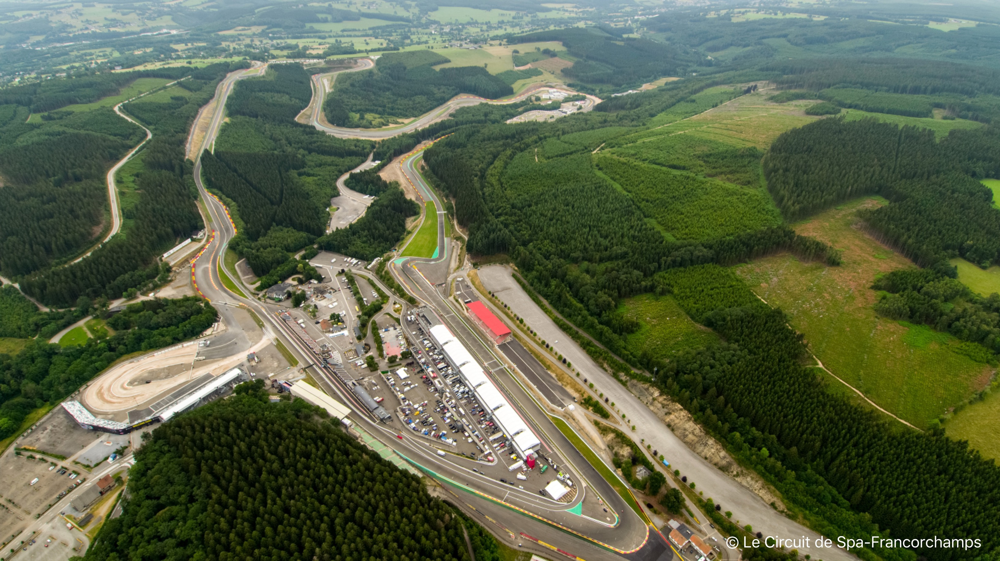

Sport spielt in Belgien eine wichtige Rolle im öffentlichen Leben. Die belgischen Athleten haben auf internationaler Ebene in verschiedenen Sportarten wie Fußball, Radsport, Eishockey und Motorsport große Erfolge erzielt. Besonders im Motorsport hat Belgien eine lange und erfolgreiche Geschichte.
Die Rennstrecke in Spa-Francorchamps ist eine der bekanntesten Rennstrecken der Welt und seit Jahren Austragungsort des Formel-1 Grand Prix von Belgien. Auch andere Rennserien wie die 24 Stunden von Spa-Francorchamps, die World Endurance Championship und die Blancpain GT Series haben in Spa-Francorchamps stattgefunden. Der Belgier Jacky Ickx, einer der erfolgreichsten Rennfahrer aller Zeiten, ist in Belgien geboren und aufgewachsen.

Neben dem Motorsport ist Fußball in Belgien sehr beliebt und erfolgreich. Die belgische Nationalmannschaft erreichte bei der Weltmeisterschaft 2018 den dritten Platz und hat viele talentierte Spieler wie Kevin De Bruyne, Eden Hazard und Romelu Lukaku hervorgebracht. Die belgische Liga, die Jupiler Pro League, ist ebenfalls sehr populär und hat in den letzten Jahren einige europäische Erfolge erzielt.
Im Radsport hat Belgien eine lange Tradition und ist bekannt für seine klassischen Rennen wie die Flandern-Rundfahrt und Lüttich-Bastogne-Lüttich. Eddy Merckx, der als einer der besten Radfahrer aller Zeiten gilt, ist Belgier und hat zahlreiche Tour-de-France-Siege und andere Titel gewonnen.
Auch Eishockey hat in Belgien eine kleine, aber leidenschaftliche Fangemeinde. Die belgische Nationalmannschaft hat sich bereits mehrmals für Weltmeisterschaften qualifiziert und das Land hat einige talentierte Spieler hervorgebracht.
Neben diesen Sportarten gibt es in Belgien auch Erfolge im Tennis, Basketball, Hockey und Volleyball. Die Belgier sind auch bekannt für ihre Leidenschaft für Radsport und Wandern. Viele Wanderwege und Radwege in Belgien führen durch malerische Landschaften und bieten atemberaubende Aussichten.
Insgesamt ist Sport ein wichtiger Teil der belgischen Kultur und das Land hat eine lange Tradition und Erfolgsgeschichte in verschiedenen Sportarten. Ob im Motorsport, Fußball, Radsport oder anderen Sportarten, Belgien hat viele erfolgreiche Athleten und Teams hervorgebracht und wird auch in Zukunft sicherlich noch viele Erfolge feiern.